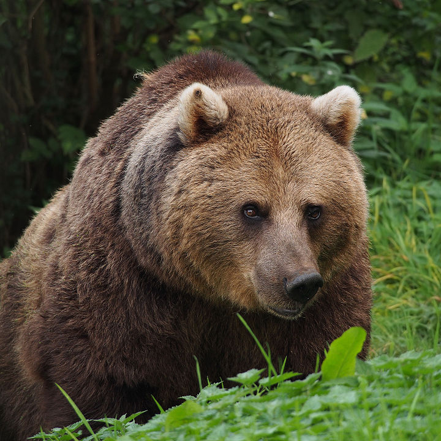

About Brown Bears
The brown bear (Ursus arctos) is native to parts of northern Eurasia and North America. Its conservation status is currently least concern.
There are many subspecies within the brown bear species, including the Atlas bear and the Himalayan brown bear.
Species
- Arctos
- Collarus
- Horribilis
- Nelsoni (extinct)

Features
Brown bears are not always completely brown. Some can be reddish or yellowish. They have very large, curved claws and huge paws. Male brown bears are often 30% larger than female brown bears. They can range from 5 feet to 9 feet from head to toe.
Habitat
Countries with Large Brown Bear Populations
Russia, United States and Canada
Countries with Small Brown Bear Populations
Some countries with smaller brown bear populations include Armenia, Belarus, Bulgaria, China, Finland, France, Greece, India, Japan, Nepal, Poland, Romania, Slovenia, Turkmenistan, and Uzbekistan.